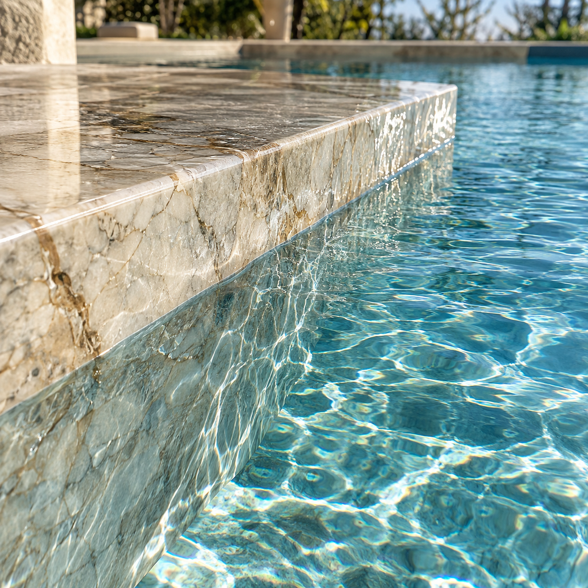
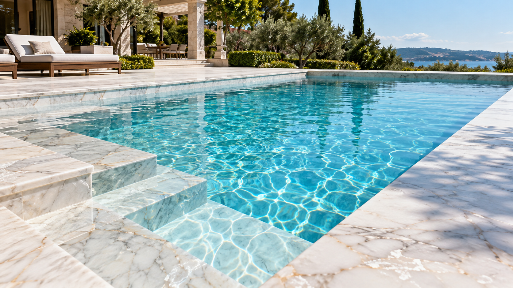
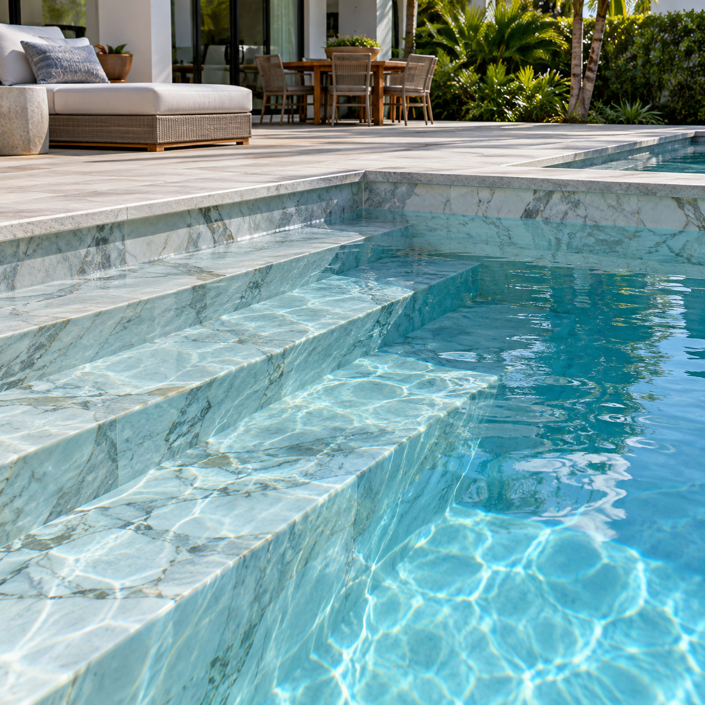
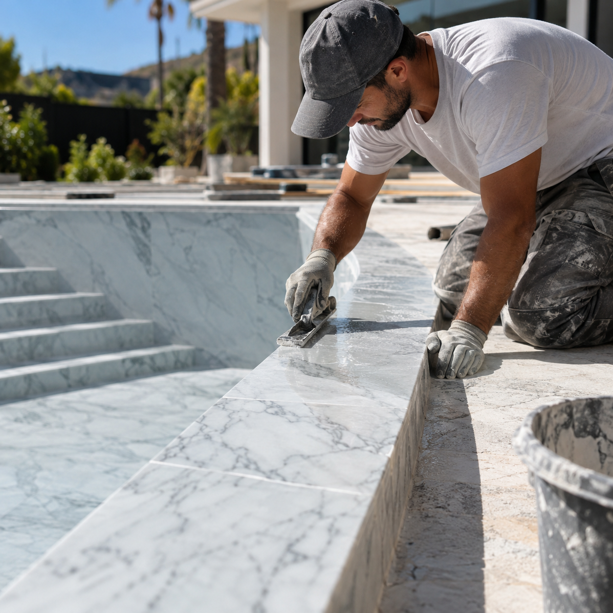
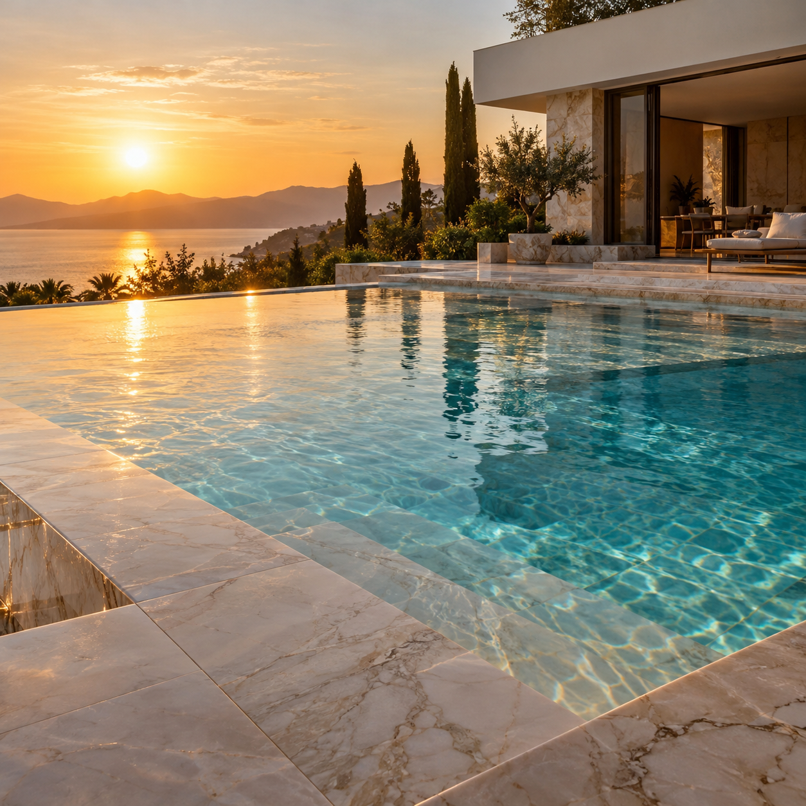

VILLA DE MAYO · REVESTIMIENTOS
Revestimientos para piscinas de mármol pulido al agua.
Una terminación que pone el agua, la textura y la luz en primer plano. Conocé el revestimiento y consultanos por tu piscina.
EspecialidadREVESTIMIENTOS PARA PISCINAS
UbicaciónVilla de Mayo
HorarioLunes a domingo · 8 a 23 h
LO QUE HACEMOS
El revestimiento, en detalle
Mármol pulido al agua para una piscina con presencia propia. Mirá sus terminaciones y escribinos para conversar sobre tu proyecto.

02 / 04
Escalones y encuentros
Detalles donde el revestimiento se encuentra con el diseño de la piscina.
Consultar servicio ↗

04 / 04
Piscina terminada
La superficie terminada y su relación con el agua y la luz.
Consultar servicio ↗REVESTIMIENTOS PARA PISCINAS
EL PROYECTO
Una terminación que cambia la experiencia del agua.
El revestimiento de mármol pulido al agua acompaña las líneas de la piscina y hace visibles sus detalles. Consultanos para conocer más sobre la aplicación.
Hacer una consulta ↗GALERÍA
La piscina desde cada ángulo
Imágenes de referencia para explorar superficies, bordes y terminaciones.
CONTACTO DIRECTO
+54 9 374 363-9178 ↗Hablemos de tu piscina.
Estamos en Villa de Mayo. Atendemos todos los días de 8 a 23 h.